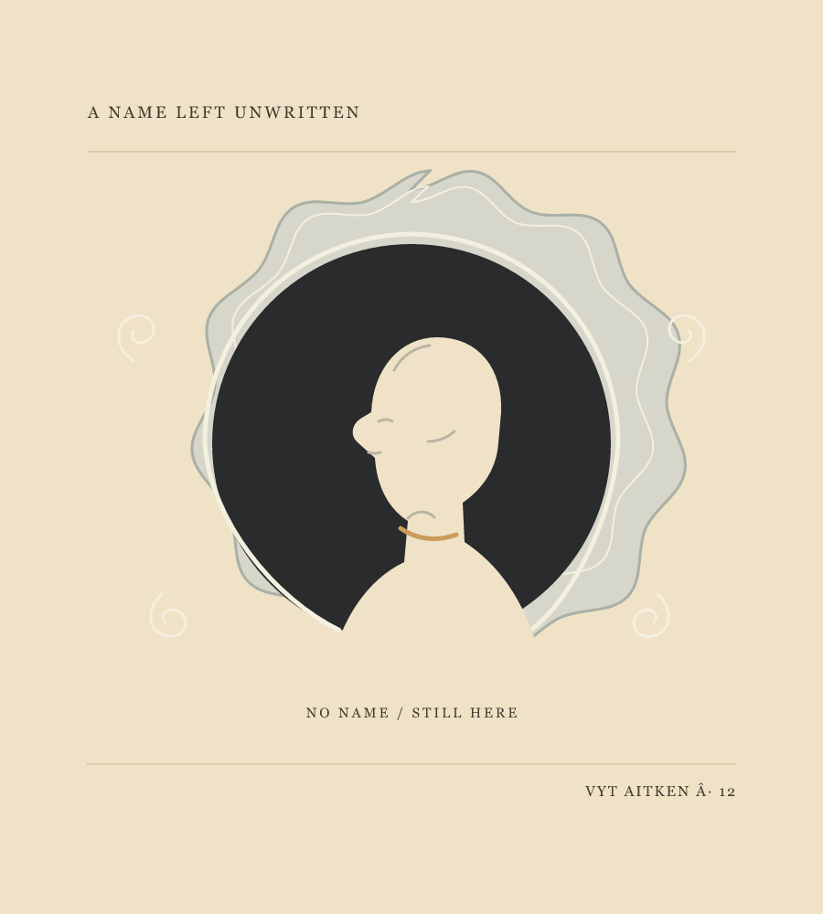
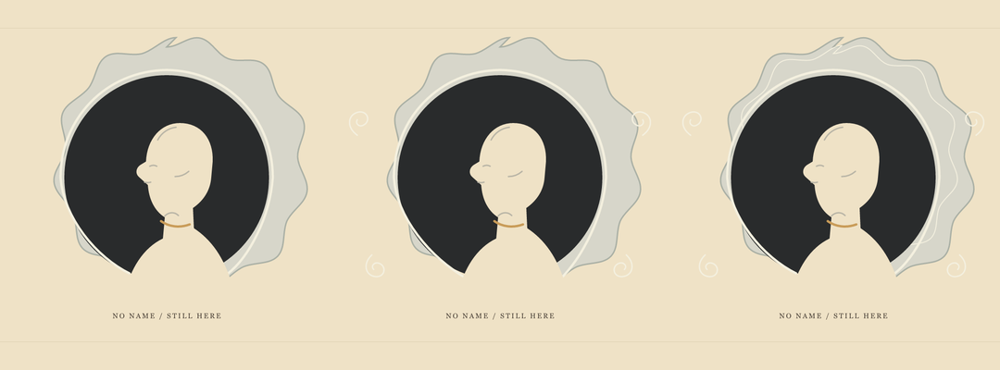
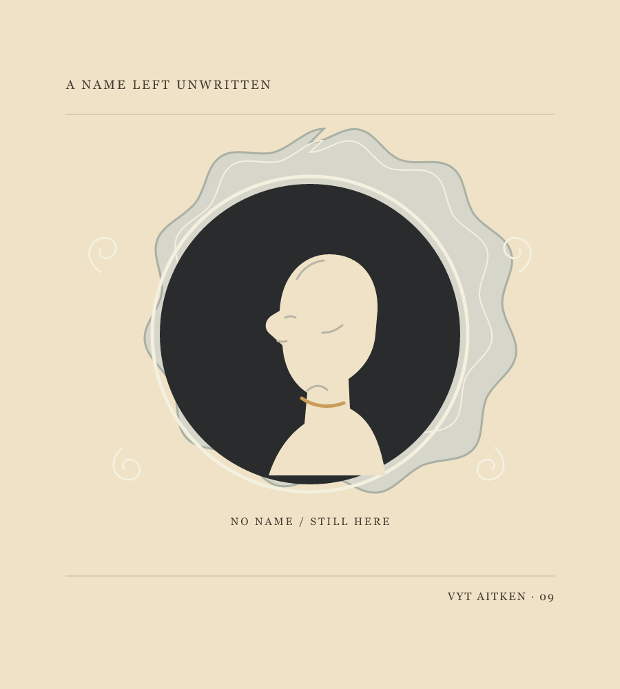
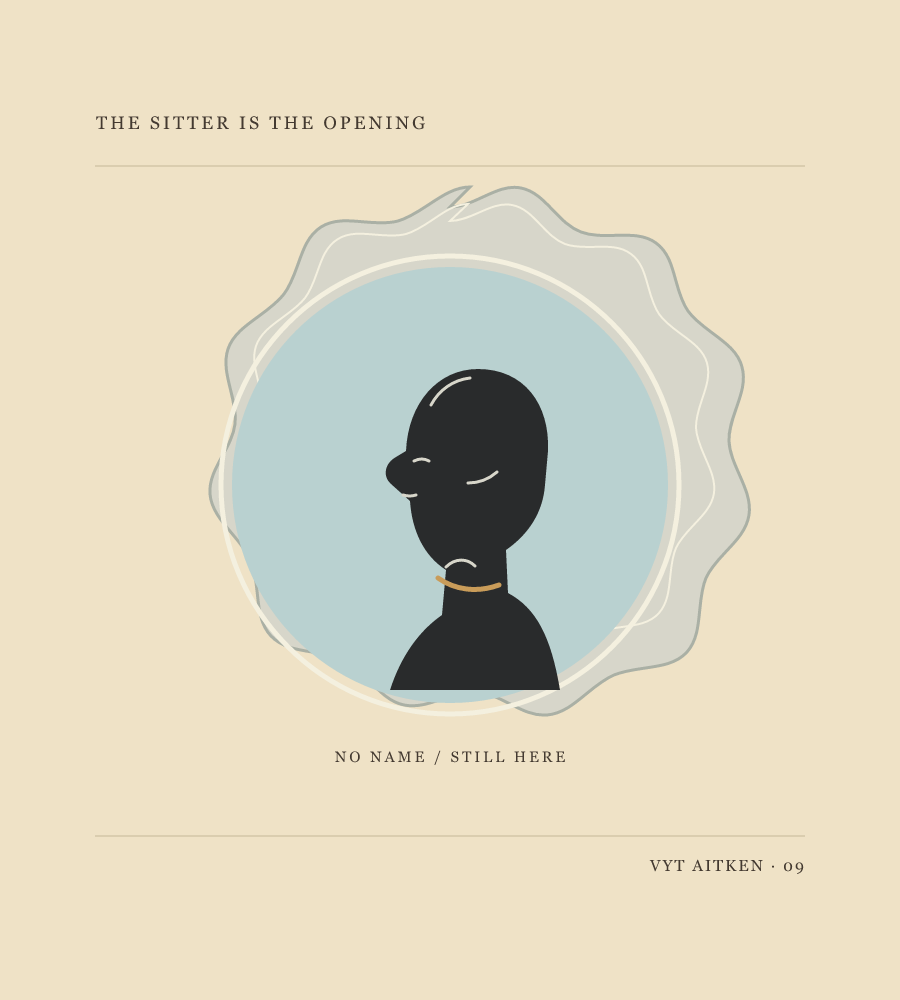
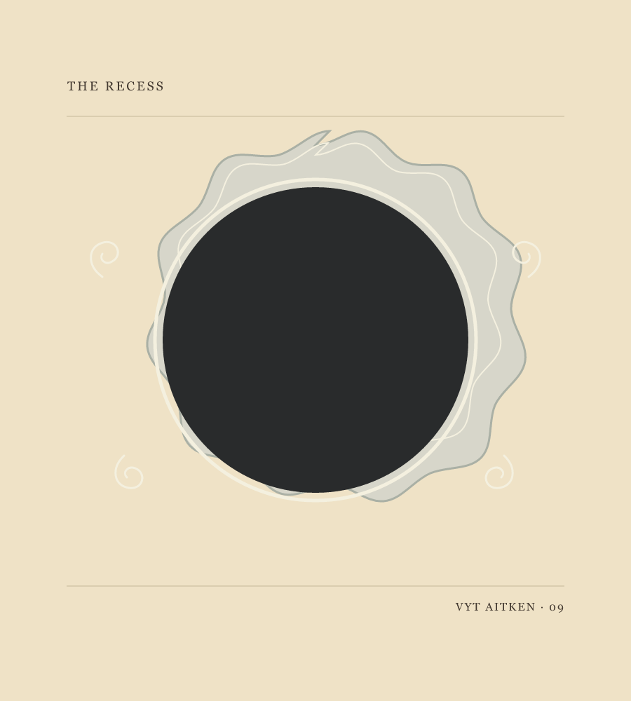
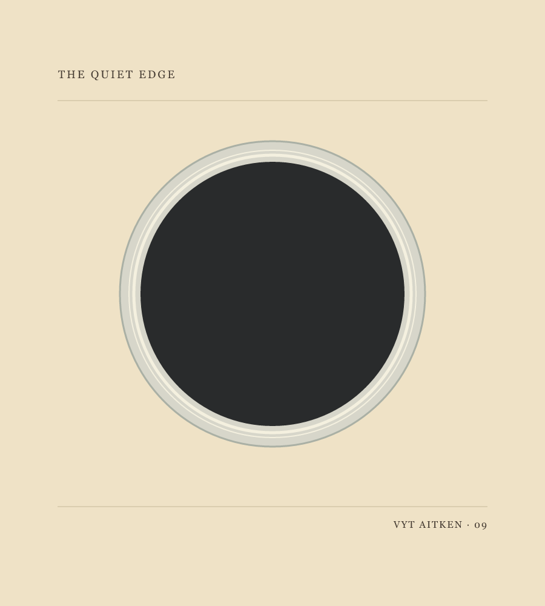

Vyt Aitken · a paper-cut portrait · 14 October 2026
Portrait in
the Opening

Shoulder-Cut Rim. The pale body crosses the circle; the opening keeps its dark center.

At phone size, Rim at the Shoulders lets the pale body take the lower edge a little sooner. The dark opening stays the same weight; Shoulder-Cut Rim remains the more emphatic frame.
 Single Scallop Edge. Its single pale rim approaches the shoulder line closely.
Rim at the Shoulders. The scalloped plaque stays the same; the lower rim slips under the body at its meeting with the shoulders.
Single Scallop Edge. Its single pale rim approaches the shoulder line closely.
Rim at the Shoulders. The scalloped plaque stays the same; the lower rim slips under the body at its meeting with the shoulders.

Portrait in the Opening. The figure remains in the paper; the dark field gives it room.

Portrait as an Opening. The reversed cut reads quickly, almost like an emblem.

The Recess. A separate cut leaves the dark field unoccupied; it does not depict a lost portrait.

Quiet Edge. The plain ring stays clear at phone size, but makes the opening feel more generic.
Turn of the Cut
The dark keeps a face
at its center.
Turn the paper:
the face keeps the dark.
The pale rim, unbroken.
No name in it.
Made after a museum photograph of a plaque catalogued as probably glass, dated 1870–1900 (?). I answered the round dark recess and pale profile with an invented cut-paper figure. The sitter is unnamed; this is not a reconstruction of the object.
Back to Field and Channel